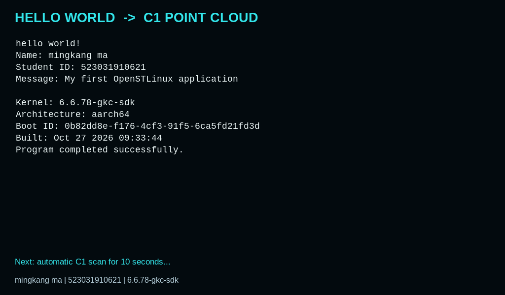
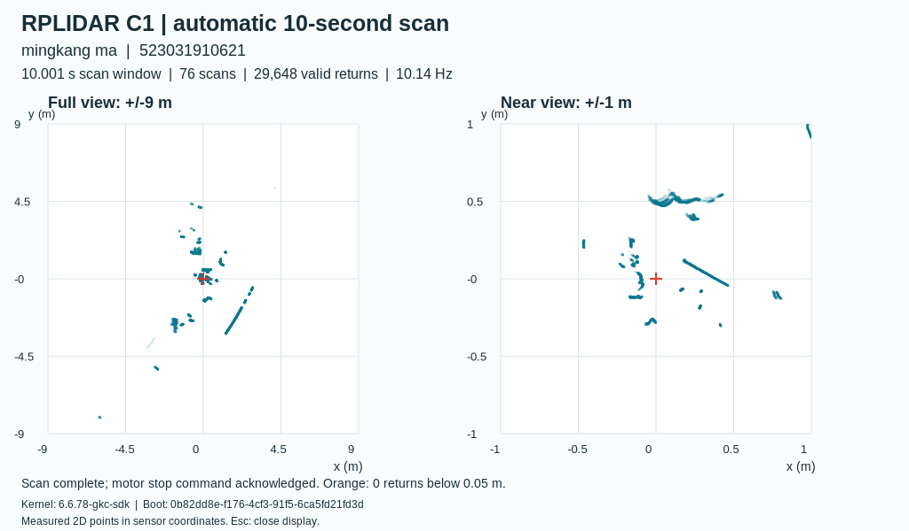

实际结果姓名修正后指令启动实测（物理上电验证已按用户要求暂缓）：10.001000 秒，76 圈，29,648 个有效点。内核 6.6.78-gkc-sdk；启动编号 0b82dd8e-f176-4cf3-91f5-6ca5fd21fd3d。

姓名修正后指令启动实测（物理上电验证已按用户要求暂缓）：先执行并显示 Hello World。截图直接来自板卡 HDMI 输出。
姓名修正后指令启动实测（物理上电验证已按用户要求暂缓）：随后显示本次 10 秒扫描结果。截图直接来自板卡 HDMI 输出。C1 开机扫描与屏幕显示：快速复现
适用于本组已完成前面实验的 STM32MP257F-DK：自编译内核 6.6.78-gkc-sdk，OpenSTLinux v25.06.11，Hello World 已安装到 /opt/hello-lab/hello_world。连接 C1 的 USB 转串口适配器、HDMI 屏幕和屏幕供电；CN15 连接电脑，仅用于部署、查看日志。
完成后：开机先显示 Hello World、姓名学号约 7 秒，再扫描 10 秒，在板卡本地生成并全屏显示二维点云。完成后图像保持显示；不需要电脑参与采集、绘图或显示。
2026-10-27 验收状态：软件重启后的自动流程已通过；修正为 mingkang ma / 523031910621 后，通过指令再次完成全流程，实测 10.001 秒、76 圈、29,648 个有效点。物理断电上电验证按用户要求暂缓，不能记作已通过。本次已向板卡执行关机指令，待下次恢复供电使用。
1. 安装一次
本板已安装，直接跳到第 2 步即可。重新部署时，在 macOS 终端或 Windows PowerShell 中进入 boot-demo/output，运行：
scp -O c1-boot-demo.tar.gz root@192.168.7.1:/home/root/
ssh root@192.168.7.1
核对首次 SSH 指纹；本组镜像 root 密码为空。接下来的命令均在板卡终端执行：
cd /home/root
tar -xzf c1-boot-demo.tar.gz
cd c1-boot-demo
sh install.sh
包内有已编译的采集程序、同一次自编译内核构建的 CP210x/USB serial 驱动模块、绘图程序和启动服务，无需板卡联网下载。使用板卡已有的 Python 3、GTK 3、Cairo、Weston。安装器校验文件摘要、内核版本和模块 vermagic，自动备份旧配置。它保留现有 Hello World 程序，关闭旧的独立 Hello World 显示窗口，改由一个窗口依次展示两项实验。
本包的 /dev/c1lidar 规则绑定本次适配器的序列号 fcd91045e273ef11aa56d18c8fcc3fa0。更换另一只 C1 适配器时，应先在板卡用 udevadm info -q property -n /dev/ttyUSB0 查出 ID_SERIAL_SHORT，安装时改为 C1_USB_SERIAL=查到的序列号 sh install.sh。其他内核即使名字相同也未必 ABI 相同，必须使用对应源码、配置和 Module.symvers 编出的模块。
2. 用指令控制
c1ctl start # 从 Hello World 开始，重新扫描并显示
c1ctl status # 查内核、服务、姓名学号、扫描时长、结果路径
c1ctl result # 打印本次数据目录
c1ctl stop # 停止采集并关闭显示窗口
c1ctl enable # 启用以后每次开机自动运行
start 每次创建新的数据目录，不覆盖旧结果。status 中的 phase: complete 才表示采集和绘图完成；仅 active 不能代表成功。phase: failed 时屏幕显示错误，查看 capture.log，检查 C1 连接后再运行 c1ctl start。
只做终端采集、不展示窗口时：
c1ctl stop
run=$(mktemp -d /home/root/c1-manual.XXXXXX)
flock -n -F /var/lib/c1-lab/serial.lock /opt/c1-lab/c1_capture /dev/c1lidar --seconds 10 "$run/scan.csv"
python3 /opt/c1-lab/render_pointcloud.py "$run/scan.csv" "$run/pointcloud.png"
不要同时运行官方示例与自动采集程序。手动中断采集用 Ctrl+C，程序会发送停止命令并保留部分 CSV。
3. 修改姓名学号
按前面的 Hello World 手册修改 C 源码并使用官方 SDK / Makefile 编译，把新程序放到 /opt/hello-lab/hello_world。输出应保留 Name: 你的姓名（也支持 Student:）和 Student ID: 你的学号 两行。执行 c1ctl start 后，点云图与采集日志会自动沿用这两项信息。
本次恢复为 mingkang ma / 523031910621。原板上另一位组员的程序已备份为 /home/root/c1-demo-backup.EFjJm7/hello_world.Shuhan-Ge。本次源码和 Makefile 在完整资料包的 boot-demo/hello-example 中；安装 C1 包不会覆盖其他组员的 Hello World。
4. 验证开机自启
c1ctl enable
sync
systemctl reboot
无需登录或输入采集命令，等待显示 Hello World → 扫描提示 → 点云图。本板通常在 Linux 启动约 35 秒显示 Hello World，约 59 秒显示点云；实际时间受启动状态影响。再用 c1ctl status 核对 boot_id 与 cat /proc/sys/kernel/random/boot_id 一致，phase 为 complete。
老师要求的“上电自动运行”还要实际断电验证：先 systemctl poweroff，确认关机后断开所有可能给板卡供电的连接，电源灯熄灭约 5 秒，再恢复连接。观察屏幕顺序，并检查新启动编号和新数据目录；软重启只能证明重启自启。
5. 取出图片和数据
在电脑终端 / PowerShell中执行：
scp -O root@192.168.7.1:/var/lib/c1-lab/latest/pointcloud.png .
scp -O root@192.168.7.1:/var/lib/c1-lab/latest/scan.csv .
scp -O root@192.168.7.1:/var/lib/c1-lab/latest/scan.csv.json .
scp -O root@192.168.7.1:/var/lib/c1-lab/latest/state.json .
左图显示全部范围，右图放大雷达周围 ±1 m；红十字是雷达原点。两图来自本次采集的所有有效点叠加，均为传感器坐标系下的二维测距，未做 SLAM。橙色表示低于 C1 标称最小量程 5 cm 的回波，不把它们作为可靠测距。
10 秒用单调时钟控制，从 SDK 开始扫描成功返回后计时，包含电机启动和等待数据；丢弃最初 5 圈。因此有效数据跨度、圈数会小于“完整 10 秒稳定扫描”，不能把固定 100 圈当作精确 10 秒。日志保存实际 scan_window_seconds；扫描结束后调用 SDK stop() 并断开串口。
6. 驱动与编译依据
uname -r
modinfo -F vermagic cp210x
lsmod | grep -E 'cp210x|usbserial'
readlink -f /sys/class/tty/ttyUSB0/device/driver
应看到 6.6.78-gkc-sdk、与其匹配的模块版本、已加载的两个模块，以及绑定到 cp210x 的设备。/etc/modules-load.d/c1-lidar.conf 负责开机加载；udev 创建稳定串口名；systemd 启动 c1-demo.service。C1 串口参数是 460800、8N1。
CP210x 是内核驱动；RPLIDAR SDK 是用户空间库。驱动来自本次内核构建的 install_artifact/lib/modules/6.6.78-gkc-sdk/kernel/drivers/usb/serial/，内核配置为 CONFIG_USB_SERIAL=m、CONFIG_USB_SERIAL_CP210X=m。需要重新编译时，沿用前面内核实验的源码、配置、输出目录和官方 SDK，执行 make O="$out" -j4 modules、make O="$out" INSTALL_MOD_PATH="$out/install_artifact" INSTALL_MOD_STRIP=1 modules_install。不要仅为了安装驱动重新生成 defconfig。
采集程序的重新编译仍在 Ubuntu 中执行完整包的 lidar-lab/scripts/build.sh，源码为 src/c1_capture.cpp，官方库源码为 vendor/rplidar_sdk。macOS 的 ARM Ubuntu 使用 ARM 主机版 OpenSTLinux SDK；Windows 的 x86_64 Ubuntu 使用 x86 主机版 SDK；目标均为 AArch64。编译后将 output/c1_capture 复制到板卡 /opt/c1-lab/c1_capture，先停止 c1-demo 再替换，再 c1ctl start 验证。
数据保存在 /var/lib/c1-lab/runs/，latest 仅指向最近一次运行。日志使用启动编号和 /proc/uptime 判断先后；本板 RTC 日期不准确，不能只看日志的年月日。
本次为获取真实 HDMI 截图，临时给现有 Weston 开启了 --debug 截图权限；安装包本身不会开启此选项。因为已关机且暂缓重新上电，恢复动作留待下次板卡连接后在板卡执行，随后自动演示会重跑一次：
cp -p /home/root/c1-boot-evidence/weston-default.before /etc/default/weston
systemctl restart weston-graphical-session.service
这两条仅用于本次板卡的取证清理，其他组员新装无需执行。